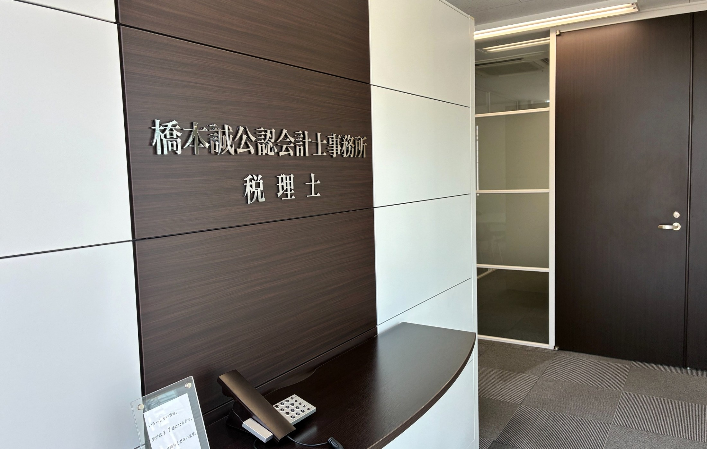
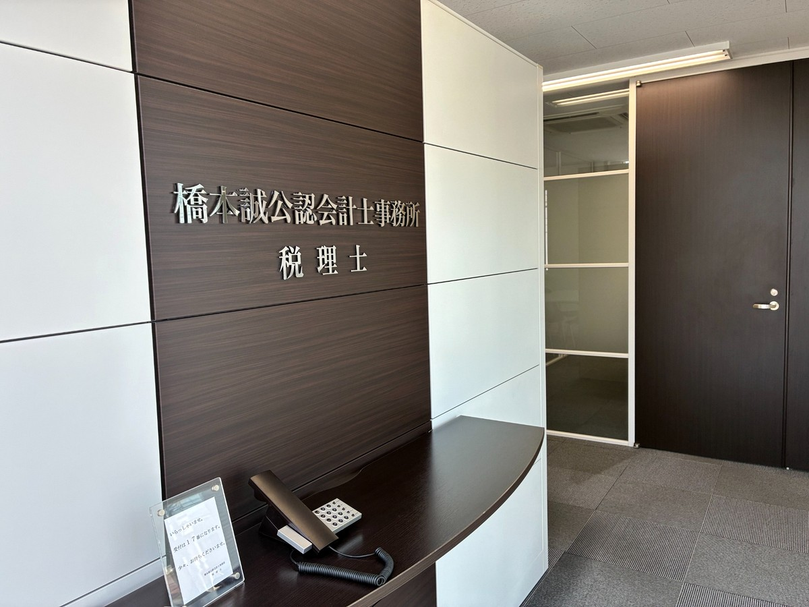

未経験から段階的に学べる
会計ソフトの入力や所内業務から始め、基礎を確認しながら決算・申告業務へ進みます。

ABOUT US
会計事務所の仕事は、単なる入力作業ではありません。税務顧問、法人決算・申告、相続税申告を通じて、お客様の事業や暮らしを支える仕事です。
当事務所では、未経験の方も所内業務から少しずつ覚え、経験に応じて担当業務へ進めるよう支援します。
WHY HASHIMOTO OFFICE
専門性を身につけながら、安心して長く働ける環境づくりを大切にしています。
会計ソフトの入力や所内業務から始め、基礎を確認しながら決算・申告業務へ進みます。
経験を積んだ後は、顧客担当もお任せします。説明力や対応力まで身につけられます。
少人数だからこそ、分からないことを抱え込まず、すぐに確認できる環境です。
子育てなどライフステージに応じ、勤務時間やパート勤務への切替も相談できます。
OUR WORK
専門知識だけでなく、お客様に寄り添う力も実務を通じて身につけます。
顧問先からお預かりした資料の確認、会計処理、月次業務などを行います。
決算整理、決算書・税務申告書作成の補助を行い、段階的に担当範囲を広げます。
財産資料の整理や評価、申告書作成など、相続に関する実務を経験できます。
OUR OFFICE
求人票だけでは伝わりにくい、事務所の落ち着いた雰囲気をご覧ください。



GROWTH STEP
経験や理解度に応じて、無理なく担当範囲を広げていきます。
資料整理、会計ソフトの操作、基本的な所内ルールから始めます。
所長や先輩の確認を受けながら、担当できる業務を増やします。
法人税や消費税などの申告書作成を、基礎から学びます。
経験に応じて顧客を担当し、専門職としての力を高めます。
REQUIREMENTS
応募前のご質問も受け付けています。お気軽にお問い合わせください。
※掲載内容は求人票を基に作成しています。採用時の労働条件は、書面で正式にご案内します。
FAQ
はい。未経験の方は所内業務から始め、段階的に指導します。
ライフステージに応じ、勤務時間やパート勤務への切替について相談できます。
はい。電話またはメールでお問い合わせください。
ENTRY / CONTACT
応募前のご質問も歓迎します。下記からお気軽にご連絡ください。